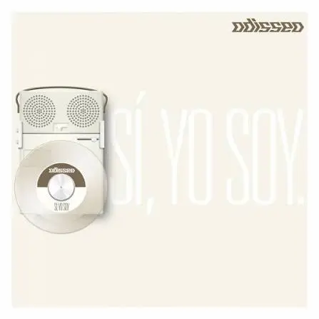

Álbum seleccionado
Sí, Yo Soy
Odisseo
Año de lanzamiento — 2012
Un punto de partida para conocer el sonido de Odisseo. Sus melodías y arreglos permiten acercarse a una propuesta que combina el rock con una sensibilidad marcada por las emociones y las relaciones personales.
Explorar álbum